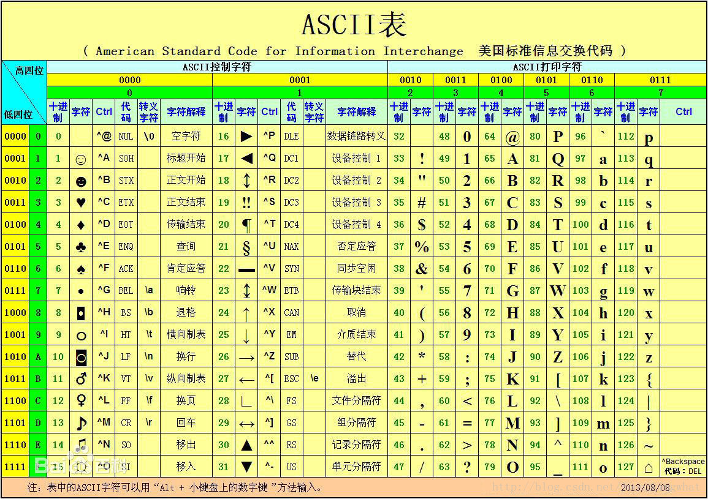
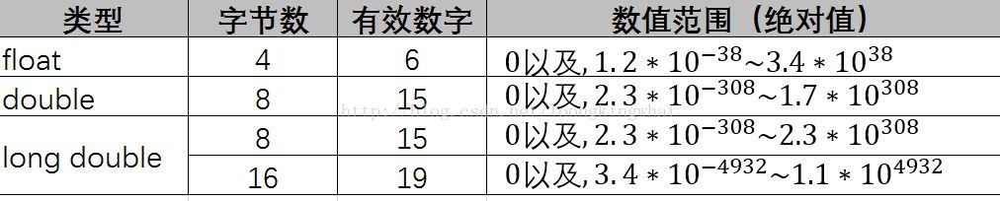

| 转义字符 | 字符值 | 输出结果 |
| \' | ' | 具有此八进制码的字符 |
| \" | " | 输出此字符 |
| \? | ? | 输出此字符 |
| \\ | \ | 输出此字符 |
| \a | 警告(alert) | 产生声音或视觉信号 |
| \b | 退格 | 将当前位置后退一个字符 |
| \f | 换页 | 将当前位置移到下一页的开头 |
| \n | 换行 | 将当前位置移到下一行开头 |
| \r | 回车 | 将当前位置移到本行开头 |
| \t | 水平制表符 | 将当前位置移到下一个Tap位置 |
| \v | 垂直制表符 | 将当前位置移到下一个垂直制表对齐点 |
| \o、\oo或\ooo(其中o代表一个八进制数字) | 与该八进制码对应的ASCII字符 | 与该八进制码对应的字符 |
| \xh[h...]其中h代表一个十六进制 | 与该十六进制码对应的ASCII字符 | 与该十六进制码对应的字符 |
用define指令，指定用一个符号名称代表一个常量(习惯用大写字母表示)。没有数据类型。
例：#define PI 3.1416
C99允许使用常变量，如 const int a=3;
表示a被定义为一个整型变量，指定其值为3，而且在变量存在期间其值不能改变。常变量与常量的异同是：常变量具有变量的基本属性：有类型，占存储单元，只是不允许改变其值。可以说，常变量是有名字的不变量，而常量是没有名字的不变量。有名字就便于在程序中被引用。从使用的角度看，常变量具有符号常量的优点，而且使用方便。有了常变量以后，可以不必多用符号常量。
基本类型（包括整型和浮点型）和枚举类型变量都是数值，统称为算数类型（arithmetic type）算数类型和指针类型统称为纯量类型（scalar type），因为其变量值是用数字来表示的。枚举类型是程序中用户定义的整数类型。数据类型和结构体类型统称为组合类型（aggregate type），共用体类型不属于组合类型，因为在同一时间内只有一个成员具有值。
基本整型（int 型）在turbo C2.0被分配2个字节，而visual C++为每一个整型数据分配4个字节。在存储单元中的存储方式为用整数的补码（compelement）形式存放。一个正数的补码正是此数的二进制形式，如果是一个负数，则应先求出负数的补码：先将此数的绝对值写成二进制形式，然后对其后面所有各二进位按位取反，再加1.
如果给整型变量分配2个字节，则存储单元中能存放的最大值为0111111111111111，第一位0代表正数，后面15位全为1，此数值是2e15-1，即十进制数32767，最小值为1000000000000000，此数为2e-15，即-32768.因此一个整型变量的值的范围是-32768——32767。超出此范围，就出现数值的溢出，输出的结果显然不正确。如果给整型分配4个字节，其能容纳的数值范围为-2e31——(2e31-1)，即-2147483648——2147483647
短整型（short int）类型名为short int或short，VC分配2个字节。存储方式与int类型相同。
长整型（long int）类型名为long int或long，VC分配4个字节
双长整型（long long int）类型名为long long int或long long，一般分配8个字节。这是C99新增的类型，但许多C编译系统尚未实现。
C标准没有具体规定各种类型数据所占用存储单元的长度，这是由各编译系统自行决定的。C标准只要求long型数据长度不短于int型，short型不长于int型。即
sizeof(short)<=sizeof(int)<=sizeof(long)<=sizeof(long long)
对于整型常量，在一个整数的末尾加大写字母L或小写字母l，表示它是长整型(long int)，但在Visual C++中由于对int和long int型数据都分配4个字节，因此没有必要用long int型
在类型符号前面加上修饰符signed，则是“无符号类型”，如果加上修饰符signed，则是“有符号类型”。因此，在以上4中类型数据的基础上可以扩展为以下8种整型数据。
...
对无符号整型数据用%u格式输出，%u表示用无符号十进制数的格式输出，在将一个变量定义为无符号整型后，不应向它赋予一个负值，否则会得到错误的结果。
字符是按其代码(整数)形式存储的，下面为ASCII码
可以看到，以上的字符的ASCII代码最多用7个二进制位就可以表示，所以在C内，指定用一个字节(8位)存储一个字符(所有系统都不例外)。
字符类型也有signed和unsigned修饰符，如果在定义变量时既不加signed，也不加unsigned，C标准并未规定是按照signed char还是按照unsigned char处理，由各编译系统决定。visual C++默认为signed char类型的。
另外，ASCII代码的128~255部分是某系统扩展的ASCII字符，它并不适用于所有的系统。在中文操作系统下，ASCII代码以后的部分被作为中文字符处理，故不会显示出扩展字符。
在C语言中，实数是以指数形式存放在存储单元中的。一个实数表示为指数可以有不止一个。
在指数形式的多种表示方法中把小数部分中的小数点前的数字为0，小数点后第一位数字不为0的表示形式称为规范化的指数形式。一个实数只有一个规范化的指数形式，在程序以指数形式输出一个实数时，必然以规范化的指数形式输出。如0.314159e001
浮点型数据在存储时，例如float类型，有的系统赋予其4个字节，其中前24位(C标准并无具体规定，由各编译系统决定)表示小数部分(是以标准形式存储，同时包括符号)，后面8位表示指数部分(包括指数的符号)。由于用二进制表示一个实数以及存储单元的长度是有限的，因此不可能得到完全精确的值，只能存储成有限的精确度。
double类型，对于long double，Turbo C对long double型分配16个字节。而Visual C++ 6.0则对long double型和double型一样处理，分配8个字节。
d\对于浮点型常量，C编译系统把浮点型常量都按双精度处理，分配8个字节。
可以在常量的末尾加专用字符，强制指定常量的类型。如在3.14159后面加字母F或f，就表示是float型常量，分配4个字节，如果在实型常量后面加大写或小写的L，指定此常量为long double类型。
局部变量：1.在函数的开头定义。2.在函数中的复合语句内定义。
在复合语句中定义变量，这些变量只在本复合语句中有效，这种复合语句也称为"分程序"，"程序块"，离开该复合语句该变量就无效，系统会把它占用的内存单元释放。
全局变量(外部变量):在函数之外定义的变量。全局变量可以为本文件中其他函数所共用，它的有效范围为从定义变量的位置开始到本源文件结束。在C程序设计人员中有一个习惯(但非规定)，将全局变量名的第一个字母用大写表示。
动态存储区(存储类别)：动态地进行变量的分配和释放。在动态存储区中存放以下数据：1.函数形式参数 2.函数中定义的没有用关键字static声明的变量，即自动变量。 3.函数调用时的现场保护和返回地址等。
在定义和声明变量和函数时，一般应同时指定其数据类型和存储类别，也可以采用默认方式指定(即如果用户不指定，系统会自动隐含地指定为某一种存储类别).
C的存储类别包括4中：自动的(auto),静态的(statis),寄存器的(register),外部的(extern)
函数的局部变量，如果不专门声明为static(静态)存储类别，都是动态地分配存储空间的，数据存储在动态存储区中。在定义局部变量时，不写auto则隐晦指定为"自动存储类别"，程序的大多数变量属于自动变量。
静态局部变量(static局部变量)：有时希望函数中的局部变量的值在函数调用结束后不消失而继续保留原值，即其占用的存储单元不释放，在下一次调用该函数时，该变量就有原来的地址而不再重新定义。用static进行声明。
静态局部变量属于静态存储类别，在静态存储区内分配存储单元。在程序整个运行期间都不释放。虽然静态局部变量在函数调用结束后仍然存在，但其他函数是不能引用它，因为它是局部变量，只能被本函数引用。
寄存器变量(register变量)：一般情况下，静态，动态变量都存储在内存中的，如果有一些变量使用频繁，允许将局部变量的值放在CPU寄存器中，提高执行效率，用关键字register作声明。
现在的优化的编译系统能够识别使用频繁的变量，会自动将其放在寄存器中，而不需要程序设计者指定，因此用register定义的必要性不大。
全局变量都是放在静态存储区中的，因此它们的生存期是固定的，存在于程序的整个运行过程。
扩展外部变量的作用域：就是在定义外部变量之上，用extern声明，那么就可以在定义之上也可以用该变量了，例如：
extern int A,B,C;
int A,B,C;
提倡将外部变量放在引用它的所有函数之前，这样可以避免在函数中多加一个extern声明。
用extern声明外部变量时，类型名可以写也可以省写。例如：extern A,B,C;因为它不是定义变量，可以不指定类型，只须写出外部变量名即可。
1.在任一个文件中定义外部变量A，而用extern对A进行外部变量声明。在编译和链接时，系统会由此知道A有外部链接，可以从别处找到已定义的外部变量A，并将在另一个文件中定义的外部变量A的作用域扩展到本文件，在本文件中可以合法地引用外部变量A。更多的，用定义头文件即可。
实际上，在编译遇到extern时，先在本文件中找到其他文件中找外部变量的定义，如果找到，就在本文件中扩展作用域，如果找不到，就在连接时从其他文件中找外部变量的定义。如果从其他文件中找到了，就将作用域扩展到本文件中，如果再找不到，就按出错处理。
如果希望某些外部变量只限于被本文件引用，而不会被其他文件引用，这是可以加一个static声明。即便其他地方用了extern，也是无效的。，这样，只能用在本文件的外部变量称为静态外部变量。因此对局部变量和对全局变量采用static声明，其作用是不一样的。但凡是用static声明的，其作用域都是局限的。
通常把只能有本文件使用的函数和外部变量放在文件开头，前面都冠以static使之局部化，其他文件不能引用。这样就提高了程序的可靠性。
如果在定义函数时，在函数的首部的最左端加关键字extern，则此函数是外部函数，可供其他文件调用。如果在定义函数时省略extern，则默认为外部函数。